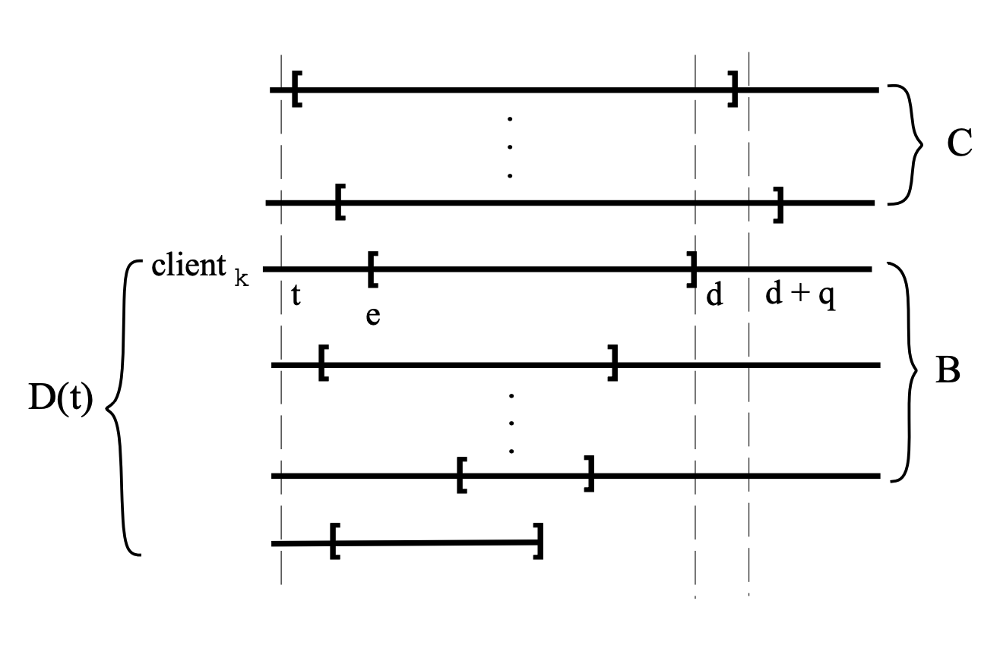

<!doctype html><html lang="en" ><head><meta http-equiv="Content-Type" content="text/html; charset=UTF-8"><meta name="theme-color" media="(prefers-color-scheme: light)" content="#f7f7f7"><meta name="theme-color" media="(prefers-color-scheme: dark)" content="#1b1b1e"><meta name="apple-mobile-web-app-capable" content="yes"><meta name="apple-mobile-web-app-status-bar-style" content="black-translucent"><meta name="viewport" content="width=device-width, user-scalable=no initial-scale=1, shrink-to-fit=no, viewport-fit=cover" ><meta name="generator" content="Jekyll v4.3.3" /><meta property="og:title" content="schedule: Directory" /><meta name="author" content="fuqiang" /><meta property="og:locale" content="en" /><meta name="description" content="eevdf 公式推导" /><meta property="og:description" content="eevdf 公式推导" /><link rel="canonical" href="/posts/eevdf-paper/" /><meta property="og:url" content="/posts/eevdf-paper/" /><meta property="og:site_name" content="one step at a time" /><meta property="og:type" content="article" /><meta property="article:published_time" content="2025-09-15T21:40:00+08:00" /><meta name="twitter:card" content="summary" /><meta property="twitter:title" content="schedule: Directory" /><meta name="twitter:site" content="@fuqiang_cai" /><meta name="twitter:creator" content="@fuqiang" /> <script type="application/ld+json"> {"@context":"https://schema.org","@type":"BlogPosting","author":{"@type":"Person","name":"fuqiang"},"dateModified":"2025-09-15T21:40:00+08:00","datePublished":"2025-09-15T21:40:00+08:00","description":"eevdf 公式推导","headline":"schedule: Directory","mainEntityOfPage":{"@type":"WebPage","@id":"/posts/eevdf-paper/"},"url":"/posts/eevdf-paper/"}</script><title>schedule: Directory | one step at a time</title><link rel="apple-touch-icon" sizes="180x180" href="/assets/img/favicons/apple-touch-icon.png"><link rel="icon" type="image/png" sizes="32x32" href="/assets/img/favicons/favicon-32x32.png"><link rel="icon" type="image/png" sizes="16x16" href="/assets/img/favicons/favicon-16x16.png"><link rel="manifest" href="/assets/img/favicons/site.webmanifest"><link rel="shortcut icon" href="/assets/img/favicons/favicon.ico"><meta name="apple-mobile-web-app-title" content="one step at a time"><meta name="application-name" content="one step at a time"><meta name="msapplication-TileColor" content="#da532c"><meta name="msapplication-config" content="/assets/img/favicons/browserconfig.xml"><meta name="theme-color" content="#ffffff"><link rel="preconnect" href="https://fonts.googleapis.com" ><link rel="dns-prefetch" href="https://fonts.googleapis.com" ><link rel="preconnect" href="https://fonts.gstatic.com" crossorigin><link rel="dns-prefetch" href="https://fonts.gstatic.com" crossorigin><link rel="preconnect" href="https://fonts.googleapis.com" ><link rel="dns-prefetch" href="https://fonts.googleapis.com" ><link rel="preconnect" href="https://cdn.jsdelivr.net" ><link rel="dns-prefetch" href="https://cdn.jsdelivr.net" ><link rel="preconnect" href="https://cdnjs.cloudflare.com" ><link rel="dns-prefetch" href="https://cdnjs.cloudflare.com" ><link rel="stylesheet" href="https://fonts.googleapis.com/css2?family=Lato:wght@300;400&family=Source+Sans+Pro:wght@400;600;700;900&display=swap"><link rel="stylesheet" href="https://cdn.jsdelivr.net/npm/bootstrap@5.3.2/dist/css/bootstrap.min.css"><link rel="stylesheet" href="https://cdn.jsdelivr.net/npm/@fortawesome/fontawesome-free@6.5.1/css/all.min.css"><link rel="stylesheet" href="/assets/css/jekyll-theme-chirpy.css"><link rel="stylesheet" href="https://cdn.jsdelivr.net/npm/tocbot@4.25.0/dist/tocbot.min.css"><link rel="stylesheet" href="https://cdn.jsdelivr.net/npm/loading-attribute-polyfill@2.1.1/dist/loading-attribute-polyfill.min.css"><link rel="stylesheet" href="https://cdn.jsdelivr.net/npm/magnific-popup@1.1.0/dist/magnific-popup.min.css"> <script type="text/javascript"> class ModeToggle { static get MODE_KEY() { return 'mode'; } static get MODE_ATTR() { return 'data-mode'; } static get DARK_MODE() { return 'dark'; } static get LIGHT_MODE() { return 'light'; } static get ID() { return 'mode-toggle'; } constructor() { if (this.hasMode) { if (this.isDarkMode) { if (!this.isSysDarkPrefer) { this.setDark(); } } else { if (this.isSysDarkPrefer) { this.setLight(); } } } let self = this; /* always follow the system prefers */ this.sysDarkPrefers.addEventListener('change', () => { if (self.hasMode) { if (self.isDarkMode) { if (!self.isSysDarkPrefer) { self.setDark(); } } else { if (self.isSysDarkPrefer) { self.setLight(); } } self.clearMode(); } self.notify(); }); } /* constructor() */ get sysDarkPrefers() { return window.matchMedia('(prefers-color-scheme: dark)'); } get isSysDarkPrefer() { return this.sysDarkPrefers.matches; } get isDarkMode() { return this.mode === ModeToggle.DARK_MODE; } get isLightMode() { return this.mode === ModeToggle.LIGHT_MODE; } get hasMode() { return this.mode != null; } get mode() { return sessionStorage.getItem(ModeToggle.MODE_KEY); } /* get the current mode on screen */ get modeStatus() { if (this.isDarkMode || (!this.hasMode && this.isSysDarkPrefer)) { return ModeToggle.DARK_MODE; } else { return ModeToggle.LIGHT_MODE; } } setDark() { document.documentElement.setAttribute(ModeToggle.MODE_ATTR, ModeToggle.DARK_MODE); sessionStorage.setItem(ModeToggle.MODE_KEY, ModeToggle.DARK_MODE); } setLight() { document.documentElement.setAttribute(ModeToggle.MODE_ATTR, ModeToggle.LIGHT_MODE); sessionStorage.setItem(ModeToggle.MODE_KEY, ModeToggle.LIGHT_MODE); } clearMode() { document.documentElement.removeAttribute(ModeToggle.MODE_ATTR); sessionStorage.removeItem(ModeToggle.MODE_KEY); } /* Notify another plugins that the theme mode has changed */ notify() { window.postMessage( { direction: ModeToggle.ID, message: this.modeStatus }, '*' ); } flipMode() { if (this.hasMode) { if (this.isSysDarkPrefer) { if (this.isLightMode) { this.clearMode(); } else { this.setLight(); } } else { if (this.isDarkMode) { this.clearMode(); } else { this.setDark(); } } } else { if (this.isSysDarkPrefer) { this.setLight(); } else { this.setDark(); } } this.notify(); } /* flipMode() */ } /* ModeToggle */ const modeToggle = new ModeToggle(); </script><body><aside aria-label="Sidebar" id="sidebar" class="d-flex flex-column align-items-end"><header class="profile-wrapper"> <a href="/" id="avatar" class="rounded-circle"></a><h1 class="site-title"> <a href="/">one step at a time</a></h1><p class="site-subtitle fst-italic mb-0">a noob's growing diary</p></header><nav class="flex-column flex-grow-1 w-100 ps-0"><ul class="nav"><li class="nav-item"> <a href="/" class="nav-link"> <i class="fa-fw fas fa-home"></i> <span>HOME</span> </a><li class="nav-item"> <a href="/categories/" class="nav-link"> <i class="fa-fw fas fa-stream"></i> <span>CATEGORIES</span> </a><li class="nav-item"> <a href="/tags/" class="nav-link"> <i class="fa-fw fas fa-tags"></i> <span>TAGS</span> </a><li class="nav-item"> <a href="/archives/" class="nav-link"> <i class="fa-fw fas fa-archive"></i> <span>ARCHIVES</span> </a><li class="nav-item"> <a href="/about/" class="nav-link"> <i class="fa-fw fas fa-info-circle"></i> <span>ABOUT</span> </a></ul></nav><div class="sidebar-bottom d-flex flex-wrap align-items-center w-100"> <button type="button" class="mode-toggle btn" aria-label="Switch Mode"> <i class="fas fa-adjust"></i> </button> <span class="icon-border"></span> <a href="https://github.com/cai-fuqiang" aria-label="github" target="_blank" rel="noopener noreferrer" > <i class="fab fa-github"></i> </a> <a href="https://twitter.com/fuqiang_cai" aria-label="twitter" target="_blank" rel="noopener noreferrer" > <i class="fa-brands fa-x-twitter"></i> </a> <a href="javascript:location.href = 'mailto:' + ['iwng86','163.com'].join('@')" aria-label="email" > <i class="fas fa-envelope"></i> </a> <a href="/feed.xml" aria-label="rss" > <i class="fas fa-rss"></i> </a></div></aside><div id="main-wrapper" class="d-flex justify-content-center"><div class="container d-flex flex-column px-xxl-5"><header id="topbar-wrapper" aria-label="Top Bar"><div id="topbar" class="d-flex align-items-center justify-content-between px-lg-3 h-100" ><nav id="breadcrumb" aria-label="Breadcrumb"> <span> <a href="/">Home</a> </span> <span>schedule: Directory</span></nav><button type="button" id="sidebar-trigger" class="btn btn-link"> <i class="fas fa-bars fa-fw"></i> </button><div id="topbar-title"> Post</div><button type="button" id="search-trigger" class="btn btn-link"> <i class="fas fa-search fa-fw"></i> </button> <search class="align-items-center ms-3 ms-lg-0"> <i class="fas fa-search fa-fw"></i> <input class="form-control" id="search-input" type="search" aria-label="search" autocomplete="off" placeholder="Search..." > </search> <button type="button" class="btn btn-link text-decoration-none" id="search-cancel">Cancel</button></div></header><div class="row flex-grow-1"><main aria-label="Main Content" class="col-12 col-lg-11 col-xl-9 px-md-4"><article class="px-1"><header><h1 data-toc-skip>schedule: Directory</h1><div class="post-meta text-muted"> <span> Posted <time data-ts="1757943600" data-df="ll" data-bs-toggle="tooltip" data-bs-placement="bottom" > Sep 15, 2025 </time> </span><div class="d-flex justify-content-between"> <span> By <em> </em> </span><div> <span class="readtime" data-bs-toggle="tooltip" data-bs-placement="bottom" title="7935 words" > <em>44 min</em> read</span></div></div></div></header><div class="content"><h2 id="eevdf-公式推导"><span class="me-2">eevdf 公式推导</span><a href="#eevdf-公式推导" class="anchor text-muted"><i class="fas fa-hashtag"></i></a></h2>\[\begin{align} V(e) &amp;= V(t^i_0) + \frac{s_i(t^i_0, t)}{w_i} \tag {7} \\ V(d) &amp;= V(e) + \frac{r}{w_i} \tag {8} \\ \end{align}\]<p>If the client uses each time the entire service time it has requested, (7) and (8) we obtain the following reccurence which computes both the virtual eligible time and the virtual deadline of each request:</p>\[\begin{align} ve^{(1)} &amp;= V(t_0^i) \tag{9}\\ vd{(k)} &amp;= ve^{(k)} + \frac{r^{(k)} }{w_i} \tag{10}\\ \end{align}\]<p>因为client每次请求之前都能使用完所有的entire service, 所以</p>\[\begin{align} r &amp;= S_i(e, d) = s_i(t_0^k, t_0^{k+1}) \tag{10.1} \\ vd^{(k)} &amp;= ve^{(k)} + \frac{r^{(k)} }{w_i} \tag{10.2} \\ &amp;= ve^{(k)} + \frac{s_i(t_0^k, t_0^{k+1})}{w_i} \tag{10.3} \\ &amp;= ve^{(k+1)} \tag{11} \end{align}\]<h2 id="chapter-3"><span class="me-2">chapter 3</span><a href="#chapter-3" class="anchor text-muted"><i class="fas fa-hashtag"></i></a></h2>\[\begin{align} S_i(t_0, t^+) &amp;= (t - t_0 - s_3(t_0, t)) \frac{w_i}{w_1+w_2}, i = 1, 2 \\ &amp;=(t - t_0 - (S_3(t_0, t) - lag_3(t))) \frac{w_i}{w_1+w_2} \\ &amp;=(t - t_0 - \frac{(t - t_0) * w_3}{w_1+w_2+w_3} + lag_3(t)) \frac{w_i}{w_1+w_2} \\ &amp;=\frac{(t - t_0)(w_1+w_2+w_3) - (t - t_0) * w_3}{w_1+w_2+w_3} * \frac{w_i}{w_1+w_2} + w_i\frac{lag_3(t)}{w_1+w_2} \\ &amp;= \frac{(t - t_0)(w_1+w_2)}{w_1+w_2+w_3} * \frac{w_1}{w_1+w_2} + w_i\frac{lag_3(t)}{w_1+w_2} \\ &amp;= \frac{(t-t_0)w_1}{w_1+w_2+w_3} + w_i\frac{lag_3(t)}{w_1+w_2} \\ &amp;= w_i(V(t) - V(t_0)) + w_i\frac{lag_3(t)}{w_1+w_2} \end{align}\]<p>因为: \(S_i(t_0, t^+) = w_i(V(t^+) - V(t_0))\)</p><p>推导: \(\begin{align} w_i(V(t^+) - V(t_0)) &amp;= w_i(V(t) - V(t_0)) + w_i\frac{lag_3(t)}{w_1+w_2} \\ V(t^+) &amp;= V(t) + \frac{lag_3(t)}{w_1+w_2} \end{align}\)</p><p>可以看到在此刻, $V(t)$ 发生了跳变.</p><p>由于$t^+$ 和 $t$ 非常接近, 所以</p>\[\begin{align} s_i(t_0, t) &amp;= s_i(t_0, t^+) \\ lag_i(t^+) &amp;= S_i(t_0, t^+) - s_i(t_0, t^+) \\ &amp;= w_i(V(t^+) - V(t_0)) - s_i(t_0, t) \\ &amp;= w_i(V(t^+) - V(t_0)) - (S_i(t_0, t) - lag_i(t)) \\ &amp;= w_i(V(t^+) - V(t_0)) - (w_i(V(t) - V(t_0)) - lag_i(t)) \\ &amp;= w_i(V(t^+) - V(t)) + lag_i(t) \\ &amp;= w_i\frac{lag_3(t)}{w_1+w_2} + lag_i(t) \end{align}\]<p>所以，此时 $lag_i(t)$ 也发生了跳变.</p><p>因此，当客户端3离开时，它的 $lag$ 会按比例分配给剩余的客户端，这与我们对公平性的 理解是一致的。通过对<code class="language-plaintext highlighter-rouge">公式(9)</code>进行推广，我们得出了以下虚拟时间的更新规则：当某个客 户端j在时刻t退出竞争时，虚拟时间应按如下方式更新。</p>\[V(t) = V(t) + \frac{lag_j(t)}{\sum_{i \in \mathcal{A}(t^+)} w_i}\]<blockquote></blockquote><p>论文中还提到:</p><blockquote><p>Correspondingly, when a client $j$ joins the competition at time $t$, the virtual time is updated as follows</p></blockquote>\[V(t) = V(t) - \frac{lag_j(t)}{\sum_{i \in \mathcal{A}(t^+)} w_i}\]<p>我们来推导下这部分:</p><p>当task 3 任务带有 $lag_3$ 不为0时加入调度, 我们应该将$lag_j$这部分时间补偿/惩罚 给其他进程，和离开时相反:</p><ul><li>$lag_j$ &gt; 0 : 补偿<li>$lag_j$ &lt; 0 : 惩罚</ul><p>我们将现在的时刻记为$t$, 将来的某个时刻记做$t_n$, 进程刚进入completion的时刻为 $t^+$, 如下图所示</p><div class="language-plaintext highlighter-rouge"><div class="code-header"> <span data-label-text="Plaintext"><i class="fas fa-code fa-fw small"></i></span> <button aria-label="copy" data-title-succeed="Copied!"><i class="far fa-clipboard"></i></button></div><div class="highlight"><code><table class="rouge-table"><tbody><tr><td class="rouge-gutter gl"><pre class="lineno">1
2
3
4
</pre><td class="rouge-code"><pre>task 1 -----------
task 2 -----------
task 3 -----------
      t,t+       tn
</pre></table></code></div></div><p>我们这里要给予task3 惩罚</p>\[s_3(t, t_n) = S_3(t, t_n) - lag_3(t)\]<p>可以推导</p>\[\begin{align} S_i(t^+, t_n) &amp;= ((t_n - t) - s_3(t, t_n))\frac{w_i}{w_1+w_2+w_3} \\ &amp;= ((t_n - t) - (S_3(t_n, t) - lag_3(t)))\frac{w_i}{w_1+w_2+w_3} \\ &amp;= w_i(V(t_n) - V(t)) - lag3(t)\frac{w_i}{w_1+w_2+w_3} \\ w_i(V(t_n) - V(t^+)) &amp;= w_i(V(t_n) - V(t)) + lag3(t)\frac{w_i}{w_1+w_2+w_3} \\ V(t^+) &amp;= V(t) + \frac{lag3(t)}{w_1+w_2+w_3} \end{align}\]<p>继而可以得出上面的公式.</p><p>任务加入和任务离开不同的是, 当任务 $j$ 再次到达时，任务 $j$ 会自带一个 $lag_j(t) $,这里的 $lag_j(t)$ 和 j 任务离开时, 取同样的值.</p><p>论文的原文:</p><blockquote><p>Where $\mathcal{A}(t^+)$ contains all the active clients immediately after client j joins the competition, and $lag_j(t)$ represents the lag with which client j joins the competition. Although it might not be clear at this point, by updating the virtual time according to Eq. (18) and (19) we ensure that the sum over the lags of all active clients is always zero. This can be viewed as a conservation property of the service time, i.e., any time a client receives more service time than its share, there is at least another client that receives less. We note that if the lag of the client that leaves or joins the competition is zero, then according to Eq. (18) and (19) the virtual time does not change.9</p></blockquote><p>大概的意思是, 所有的lag相加应该为0, 所以 任务 $j$ 离开的lag和任务j加入的lag应该 是相反值.</p><p>但是，假设任务j离开是，只有任务1，任务2，其惩罚/奖励是针对任务1，2的，但是如果任 务j加入时，有任务1，2，3，其奖励/惩罚时针对任务1，2，3。似乎任务3享受到了额外的 甜点。但是该算法并不关注谁在补偿中得到的甜头，而是关注针对当前 加入/离开 任务的 奖励/惩罚。(幸运的是，论文该章节的最后一个段落会讲到这个事情。</p><p>上面提到的是任务加入与推出，那么设想下，如果任务的权重发生了变化，那$V(t)$ 该如 何计算呢?</p><blockquote><p>We note that changing the weight of an active client is equivalent to a leave and a rejoin operation that take place at the same time. To be specific, suppose that at time $t$ the weight of client $j$ is changed from $w_j$ to $w’_j$ . Then this is equivalent to the following two operations: client j leaves the competition at time t, and rejoins it immediately (at the same time t) having weight $w’_j$ . By adding Eq. (18) and (19), we obtain</p></blockquote><p>论文中提到，任务权重发生变化，相当于任务触发了leaves 和json操作，只不过在加入后，任务 的权重从$w_j$ 变为了$w’_j$</p><p>那么可得下面的公式:</p>\[V(t) = V(t) + \frac{lag_j(t)}{\sum{_{i \in \mathcal{A}(t^+)} w_i} - w_i} - \frac{lag_j(t)}{\sum{_{i \in \mathcal{A}(t^+)} w_i} - w_j + w'_j}\]<p>所以，这里也可看出来, 当一个lag 为 0 的任务，在离开和加入时，权重没有变化，则 virtual time 也不会发生变化。这种情况下，virtual time的变化时连续的。(不会发生跳 变)</p><blockquote><p>As for join and leave operations, notice that the virtual time does not change when the weight of a client with $zero$ lag is modified. Thus, in a system in which any client is allowed to join, leave, or change its weight only when its lag is zero, the variation of the virtual time is continuous</p></blockquote><h2 id="6-fairness-analysis-of-the-eevdf-algorithm"><span class="me-2">6 Fairness Analysis of the EEVDF Algorithm</span><a href="#6-fairness-analysis-of-the-eevdf-algorithm" class="anchor text-muted"><i class="fas fa-hashtag"></i></a></h2><p>In this section we determine bounds for the service time lag. First we show that during any time interval in which there is at least one active client, there is also at least one eligible pending request (Lemma 2). A direct consequence of this result is that the EEVDF algorithm is work-conserving, i.e., as long as there is at least one active client the resource cannot be idle. By using this result, in Theorem 1 we give tight bounds for the lag of any client in a steady system (see De nitions 1 and 2 below). Finally, we show that in the particular case when all the requests have durations no greater than a time quantum q, our algorithm achieves tight bounds which are optimal with respect to any proportional share allocation algorithm (Lemma 5).</p><blockquote class="prompt-trans"><p>本节我们将确定服务时间 lag 的界限。首先，我们证明在任何存在至少一个活跃客户端 的时间区间内，必然也存在至少一个符合条件的待处理请求（见引理2）。这一结果的直 接推论是，EEVDF 算法是 work-conserving 的，也就是说，只要有至少一个活跃客户端， 资源就不会空闲。基于这一结果，我们在定理1中为稳态系统中任意客户端的 lag 给出了 严格界限（见下方定义1和定义2）。最后，我们还证明，在所有请求的持续时间均不超过 一个时间片 q 的特殊情况下，我们的算法能够实现最优的严格界限，与任何比例分配算 法相比都是最优的（见引理5）。</p><blockquote class="prompt-tip"><p>work-conserving 调度算法会确保资源始终被分配给等待的任务，不会让资源空闲，除 非队列里没有任务。</p></blockquote></blockquote><p>Throughout this section we refer to any event that can change the state of the system, i.e., a client joining or leaving the competition, and changing the client’s weight, simply as event. We introduce now some definitions to help us in our analysis.</p><blockquote class="prompt-trans"><p>在本节中，我们将任何可能改变系统状态的事件——即客户端加入或离开竞争，以及更改客 户端权重——统称为事件。接下来，我们将引入一些定义以辅助我们的分析。</p></blockquote><p><strong>Definition 1</strong> A system is said to be <strong>steady</strong> if all the events occurring in that system involve only clients with $zero$</p><blockquote class="prompt-tip"><p>给出了 <strong>steady system</strong> 的定义: 所有event 均发生在 client with zero lag.</p></blockquote><p>Thus, in a steady system the lag of any client that joins, leaves, or has its weight changed, is zero. Recall that in a system in which all events involve only clients having zero lags the virtual time is continuous. As we will see, this is the basic property we use to determine tight bounds for the client lag. The following definition restricts the notion of steadiness.</p><blockquote class="prompt-trans"><p>因此，在一个稳态系统中，任何加入、离开或权重发生变化的客户端，其 lag 都为零。 请注意，在一个所有事件仅涉及 lag 为零的客户端的系统中，虚拟时间是连续的。正如 我们将看到的，这正是我们用来确定客户端 lag 严格界限的基本性质。下面的定义对 steadiness 的概念进行了限定。</p></blockquote><p><strong>Definition 2</strong> An interval is said to be <strong>steady</strong> if all the events occurring in that interval involve only client with zero lag</p><blockquote class="prompt-tip"><p>给出了 <strong>steady interval</strong> 的定义: 在某个 interval 内，所有event 均在 client with zero lag 发生。</p></blockquote><p>We note that a steady system could be alternatively defined as a system for which any time interval is steady. The next lemma gives the condition for a client request to be eligible.</p><blockquote class="prompt-tip"><p>结合 <strong>steady interval</strong> 和 <strong>steady system</strong>, 可以推导出, 在在任意时间的 interval 都是 steady 的可以成为 <strong>steady system</strong>.</p></blockquote><p><strong>Lemma 1</strong> Consider an active client $k$ with a positive $lag$ at time $t$, i.e.,</p>\[lag_k(t) \geq 0;\]<p><em>Then client k has a pending eligible request at time t</em></p><blockquote class="prompt-tip"><p>下面给出了这条引理的证明:</p></blockquote><p><strong>Proof</strong>. Let r be the length of the pending request of client k at time t (recall that an active client has always a pending request), and let $ve$ and $vd$ denote the virtual eligible time and the virtual deadline of the request. For the sake of contradiction, assume the request is not eligible at time t, i.e.,</p><blockquote class="prompt-trans"><p>证明：设 r 为客户端 k 在时刻 t 的待处理请求的长度（注意，活跃客户端始终有一个 待处理请求），令 $ve$ $vd$ 分别表示该请求的虚拟可执行时间和虚拟截止时间。为 进行反证，假设该请求在时刻 t 不具备可执行资格，即，</p></blockquote>\[ve &gt; V(t)\]<p>Let $t’$ be the time when the request was initiated. Then from Eq. (7) we have</p><blockquote class="prompt-tip"><p>r : 客户端k 在t 时刻待处理请求的长度</p><p>t’: 为发起请求的时刻</p><blockquote class="prompt-info"><p>注意，这里的发起请求，是指new request， 也就是next)</p></blockquote></blockquote>\[ve = V(t_0^k) + \frac{s_k(t_0^k, t')}{w_k}\]<p>Since between $t’$ and $t$ the request was not eligible, it follows that the client has not received any service time in the interval $[t’, t)$, and therefore $s_k(t_0^k, t’) = s_k(t_0^k, t)$ . By substituting $s_k(t_0^k, t’)$ to $s_k(t_0^k, t)$ in Eq. (23) and by using Eq. (3) and (6) we obtain</p>\[\begin{align} lag_k(t) &amp;= w_k(V(t) - V(t_0^k)) - s_k(t_0^k, t) \\ &amp;= w_k(V(t) - V(t_0^k)) - w_k(ve - V(t_0^k)) \\ &amp;= w_k(V(t) - ve) \end{align}\]<blockquote class="prompt-tip"><p>我们详细推导下:</p>\[\begin{align} s_k(t_0^k,t') &amp;= we*w_k + V(t_0^k) \\ lag_k(t) &amp;= S_k(t_0^k, t) - s_k(t_0^k, t) \\ &amp;= S_k(t_0^k, t) - s_k(t_0^k, t') \\ &amp;= w_k(V(t) - V(t_0^k)) - w_k(ve - V(t_0^k)) \\ &amp;= w_k(V(t) - ve) \end{align}\]</blockquote><p>Finally, from Ineq. (22) it follows that $lag_k (t) &lt; 0$, which contradicts the hypothesis and therefore proves the lemma.</p><blockquote class="prompt-tip"><p>由上面的等式可以得出 $V(t) - ve &lt; 0$, 从而得出 $lag_k(t) &lt; 0$</p><p>我们具体来思考下他是怎么证明的:</p><p>需要证明的引理是: 如果一个客户端k, 在t时刻有一个正的lag, 那么客户端一定有一个 pending的 eligible request.</p><p>那么证明的方法是，反证。</p><p>证明: 如果一个客户端k，在t时刻有一个正的lag, 客户端不一定有一个pending的eligible request. 如果没有eligble request，会是什么样的场景呢?</p>\[ve &gt; V(t)\]<p>结果推导出来，发一定是现$lag &lt; 0$, 与假设矛盾，原来的定理成立。</p></blockquote><p>From Lemma 1 and from the fact that any zero sum has at least a nonnegative term, we have the following corollary.</p><p><strong>Corollary 1</strong> Let A(t) be the set of al l active clients at time t, such that</p>\[\sum_{\substack{i\in A(t)}} lag_i(t) = 0\]<p>Then there is at least one eligible request at time t.</p><blockquote class="prompt-tip"><p>这里的意思是，只要 $\sum_{\substack{i\in A(t)}} lag_i(t) = 0$, 至少有一个 eligible request</p><blockquote><p><strong>Corollary</strong>: 表示推论, 不需要复杂证明</p></blockquote></blockquote><p>The next lemma shows that at any time $t$ the sum of the lags over all active clients is zero. An immediate consequence of this result and the above corollary is that at any time t at which there is at least one active client, there is also at least one pending eligible request in the system. Thus, in the sense of the definition given in [23], the EEVDF algorithm is <em>work-conserving</em>, i.e., as long as there are active clients the resource is busy</p><blockquote class="prompt-trans"><p>下一个引理表明，在任意时刻 ( t )，所有活跃客户端的滞后量之和为零。由此结果以及 上面的推论可以直接得出，在任何存在至少一个活跃客户端的时刻，系统中也必然存在至 少一个待处理且符合条件的请求。因此，根据[23]中给出的定义，EEVDF算法是工作保持 （work-conserving）的，也就是说，只要有活跃客户端，资源就始终处于忙碌状态。</p></blockquote><p>Lemma 2 At any moment of time t, the sum of the lags of al l active clients is zero</p>\[\sum_{\substack{i\in A(t)}} lag_i(t) = 0 \tag{26}\]<p><strong>Proof</strong>. The proof goes by induction. First, we assume that at time t = 0 there is no active client and therefore Eq. (26) is trivially true. Next, for the induction step, we show that Eq. (26) remains true after each one of the following events occurs: (i) a client joins the competition, (ii) a client leaves the competition, (iii) a client changes its weight. Finally, we show that (iv) during any interval $[t, t’)$ in which none of the above events occurs if Eq. (26) holds at time t, then it a n it also holds at time $t’$</p><blockquote class="prompt-trans"><p>证明。该证明采用归纳法。首先，我们假设在时间 t = 0 时没有活跃的客户端，因此公 式（26）显然成立。接下来，在归纳步骤中，我们证明在以下每一种事件发生后，公式 （26）仍然成立：（i）有客户端加入竞争；（ii）有客户端离开竞争；（iii）有客户端 改变其权重。最后，我们证明（iv）在任意一个区间 [t, t′) 内，如果上述事件都没有 发生，且公式（26）在时间 t 时成立，那么它在时间 t′ 时也成立。</p></blockquote><p><strong>Case (i)</strong>. Assume that client j joins the competition at time t with lag $lag_j(t) $. Let $t^-$ denote the time immediately before, and let $t^+$ denote the time immediately after client $j$ joins the competition, where $t^+$ and $t^-$ are asymptotically close to t. Next, let $W(t)$ denote the total sum over the weights of all active clients at time t, i.e., $W(t) = \sum_{i \in \mathcal{A}(t)} w_i (t)$ and by convenience let us take $lag_j (t^-) = lag_j(t)$ . Since $t^- \rightarrow t^+$ we have $s_i(t_0^i, t^-) = s_i(t_0^i, t^+)$. Then from Eq. (3) we obtain</p><blockquote class="prompt-tip"><ul><li>$t^-$ : client j 加入前的很接近的时间<li>$t^+$ : client j 加入后的很接近的时间</ul><p>并且为了方便让 $lag_j (t^-) = lag_j(t)$(这相当于一个策略让 任务j, $lag_j$</p><p>另外由于 $t^-$ 和 $t^+$ 两个时间很接近， 可以让 $s_i(t_0^i, t^-) = s_i(t_0^i, t^+)$</p></blockquote>\[lag_i(t^+) = lag_i(t^-) + S_i(t_0^i, t^+) - S_i(t_0^i, t^-)\]<p>Further, by using Eq. (6) and (19), the lag of any active client i at time $t^+$ (including client j) is</p>\[lag_i(t^+) = lag_i(t^-) + lag_i(t) \frac{w_i}{W(t^+)}\]<blockquote class="prompt-tip"><p>我们来推导下这部分:</p>\[\begin{align} lag_i(t^+) &amp;= S_i(t_0^i, t^+) - s_i(t_0^i, t^+) \\ &amp;= S_i(t_0^i, t^-) + S_i(t^-, t^+) - s_i(t_0 ^ i, t^-) \\ &amp;= S_i(t_0^i, t^-) - s_i(t_0 ^ i, t^-) + S_i(t^-, t^+) \\ &amp;= (S_i(t_0^i, t^-) - s_i(t_0 ^ i, t^-)) + (S_i(t^i_0, t^+) - S_i(t^i_0, t^-)) \\ &amp; = lag_i(t^-) + S_i(t^i_0, t^+) - S_i(t^i_0, t^-) \\ &amp; = lag_i(t^-) + w_i(V(t^+) - V(t_0^i)) - w_i(V(t^-) - V(t_0^i)) \\ &amp; = lag_i(t^-) + w_i(V(t^+) - V(t^-)) \end{align}\]<p>由于 $t^- \rightarrow t$ 并没有任务加入，两个时间又非常接近, 所以其 $V(t)$ 不会 发生跳变, 所以$V(t^-) = V(t)$, 从而得到</p>\[\begin{align} V(t^+) &amp;= V(t) + \frac{lag_j(t)}{W(t^+)} \\ &amp;= V(t^-) + \frac{lag_j(t)}{W(t^+)} \end{align}\]<p>带入可得:</p>\[\begin{align} lag_i(t^+) &amp;= lag_i(t^-) + w_i(V(t^+) - V(t^-)) \\ &amp;= lag_i(t^-) + w_i(V(t^-) + \frac{lag_j(t)}{W(t^+)} - V(t^-)) \\ &amp;= lag_i(t^-) + \frac{lag_j(t)}{W(t^+)} \end{align}\]</blockquote><p>Since $\mathcal{A}(t^+) = \mathcal{A}{(t^-)} \cup {j}$, and since from the induction hypothesis we have $\sum{_{i \in{\mathcal{A}(t^-)}} lag_i(t^-)} = 0$, by using Eq. (27), we obtain:</p>\[\begin{align} \sum _{\substack{i\in\mathcal{A}(t^+)}} lag_i(t^+) &amp;= \sum_{\substack{i\in\mathcal{A}(t^+)}} (lag_i(t) - lag_j(t)\frac{w_i}{W(t+)}) \\ &amp;= \sum_{\substack{i\in\mathcal{A}(t^+)}} lag_i(t^-) - lag_j(t) \frac{\sum_{_{i\in\mathcal{A}(t^+)} }w_i}{W(t^+)} \\ &amp;= \sum_{\substack{i\in\mathcal{A}(t^+)}} lag_i(t^-) + lag_j(t^-) - lag_j(t) = 0 \end{align}\]<blockquote class="prompt-tip"><p>这里我们可以简单想下，为什么任务 $j$ 带有 $lag_j$ 进入竞争, 而 $\sum_{\substack{i\in A(t)}} lag_i(t)$ 仍然不变等于0呢 ? 这部分 $lag$ 的变化， 被谁反向抵消了呢?</p><p>A: 很直观，被其他的任务的 $lag$ 变化抵消了, 所以我们可以看下所有任务（包括j）， 在j加入后的 $lag$ 变化来变相证明下.</p>\[\begin{align} lag_i(t^+) &amp;= lag_i(t) - w_i\frac{lag_j(t)}{\sum_{i \in \mathcal(A)} w_i} \\ \sum_{\substack{i\in\mathcal{A}(t^+)}}\Delta{lag_i} &amp;= \sum_{\substack{i\in\mathcal{A}(t^-)}}\Delta{lag_i} + lag_j(t) \\ &amp;= \sum_{\substack{i\in\mathcal{A}(t^-)}}\Delta{lag_i} + lag_j(t) \\ &amp;= - w_1\frac{lag_j(t)}{\sum_{i \in \mathcal{A}} w_i} - w_2\frac{lag_j(t)}{\sum_{i \in \mathcal{A}} w_i} +...+ log_j(t) \\ &amp;= -\frac{\sum{_{i\in\mathcal{A}(t^-)}w_i}} {\sum{_{i\in\mathcal{A}(t^-)}w_i}}lag_j(t) +lag_j(t) = 0 \end{align}\]<p>其实, $lag_j(t)$ 和 $V(t)$ 的逻辑是相似的，带有非0 $lag_j(t)$ 的j任务离开/加入后, 其需要 别人付出代价，lag比较直接，让别的任务的lag承担。而V(t) 比较含蓄，只做V(t)的跳 变, 这样其他的 任务的$ve$也就近似发生转变…</p></blockquote><p><strong>Case (ii)</strong>. The proof of this case is very similar to the one of the previous case; therefore we omit it here.</p><blockquote class="prompt-tip"><p>这个和 Case(i) 很相似，作者将其省略, 可以想象成上面的等式中的 $\sum_{\substack{i\in\mathcal{A}(t^-)}}\Delta{lag_i}$ 和 $lag_j(t)$ 符号相反， 得出的结果也是0.</p></blockquote><p><strong>Case (iii)</strong>. Changing the weight of a client $j$ from $w_j$ to $w_j’$ $j$ at time $t$ can be viewed as a sequence of two events: first, client $j$ leaves the competition at time $t$; second, it joins the competition at the same time $t$, but with weight $w_j’$. Thus, the proof of this case reduces to the previous two case.</p><blockquote class="prompt-tip"><p>这里也好理解，将改变权重分为两部分, 任务 $j$ 带着$lag_{j1}(t)$离开，几乎在同一 时刻, 任务 $j$ 带着$lag_{j2}(t)$ 加入竞争. 虽然 $lag_{j1}(t)$ 和 $lag_{j2}(t)$ 不相同, 但是不影响。因为离开加入作为独立event时，每个event执行后， $\sum_{\substack{i\in A(t)}} lag_i(t)$ 均不变。</p></blockquote><p>Case (iv). Consider an interval $[t, t’)$ in which no event occurs, i.e., no client leaves or joins the competition and no weight is changed during the interval $[t, t’)$ . Next, assume that $\sum_{\substack{i\in A(t’)}} lag_i(t’) = 0$, By using Eq. (3) and (6) we obtain:</p>\[\begin{align} \sum_{\substack{i\in\mathcal{A}(t')}}lag_i(t') &amp;= \sum_{\substack{i\in\mathcal{A}(t')}} (S_i(t_0^i - t') - s_i(t_0^i - t') \\ &amp;= \sum_{\substack{i\in\mathcal{A}(t)}}((S_i(t_0^i - t) - s_i(t_0^i - t)) + \sum_{\substack{i\in\mathcal{A}(t)}}((S_i(t - t') - s_i(t - t')) \\ &amp;= \sum_{\substack{i\in\mathcal{A}(t)}} lag_i(t) + \sum_{\substack{i\in\mathcal{A}(t)}}S_i(t - t') - \sum_{\substack{i\in\mathcal{A}(t)}}s_i(t - t') \\ &amp;= \sum_{\substack{i\in\mathcal{A}(t)}}w_i(V(t') - V(t)) - \sum_{\substack{i\in\mathcal{A}(t)}}s_i(t, t') \\ &amp;= (t' - t) - \sum_{\substack{i\in\mathcal{A}(t)}}s_i(t, t') \end{align}\]<p>Next we show that the resource is busy during the entire interval $[t, t’)$. For contradiction assume this is not true. Let $l$ denote the earliest time in the interval $[t, t’)$ when the resource is idle. Similarly to Eq. (29) we have:</p>\[\sum_{\substack{i\in\mathcal{A}(l)}}lag_i(l) = (l - t) - \sum_{\substack{i\in\mathcal{A}(l)}}s_i(t, l)\]<p>Since the resource is not idle at any time between $t$ and $l$, it follows that the total service time allocated to all active clients during the interval $[t, t’)$ (i.e., $\sum_{i\in\mathcal{A}(l)}s_i(t, l)$ is equal to $l - t$. Further, from the above equation we have $\sum_{i\in\mathcal{A}(l)}lag_i(l) = 0$. But then from Lemma 1 it follows that there is at least one eligible request at time $l$, and therefore the resource cannot be idle at time $l$, which proves our claim. Further, with a similar argument, it is easy to show that $\sum_{i\in\mathcal{A}(t’)}lag_i(t’) = 0$ which completes the proof of this case.</p><blockquote class="prompt-tip"><blockquote class="prompt-info"><p>第一个 $[t, t’)$ 应该是 $[t, l)$</p></blockquote><p>最终的目标是证明 $\sum_{\substack{i\in\mathcal{A}(l)}}lag_i(l) = 0$, 从上面的等式可以看出，如果 等于0，也就意味着所有任务实际的运行时间之和一定等于时间的流逝. 也就意味着在 $[t, t’)$这段时间内, 资源总是繁忙的。这里作者用了反证法, 假设在 $[t, t’)$ 时间 段中，有最早的一个时刻$l$, 该时刻是空闲的. 那么根据引理1: 如果一个client 有 $lag &gt;= 0$, 则一定有pending的请求。那么，我们就需要需要证明，在这个时刻，所有 的任务的lag 都是负值 ($lag_i &lt; 0 ,i \in\mathcal{A}(l)$). 但是所有的lag 都是负 值，就意味着 $\sum_{\substack{i\in\mathcal{A}(l)}}lag_i(l) &lt; 0$,</p><p>这样就和假设推出来的 $\sum_{\substack{i\in\mathcal{A}(l)}}lag_i(l) = 0$ 矛盾了。 从而反证成功</p></blockquote><p>Since these are the only cases in which the lags of the active clients may change, the proof of the lemma follows.</p><p>The following lemma gives the upper bound for the maximum delay of fulfilling a request in a steady system. We note that this result is similar to the one obtained by Parekh and Gallager [23] for their Generalized Processor Sharing algorithm, i.e., in a communication network, a packet is guaranteed not to miss its deadline by more than the time required to send a the time required to send a packet of maximum length.</p><blockquote class="prompt-trans"><p>由于只有在这些情况下，活跃客户的滞后值才可能发生变化，因此引理的证明即告完成。</p><p>下一个引理给出了在稳定系统中满足请求的最大延迟的上界。我们注意到，这一结果与 Parekh和Gallager [23]为其广义处理器共享（Generalized Processor Sharing）算法所 获得的结果类似，即在通信网络中，一个数据包保证不会错过其截止时间超过发送一个最 大长度数据包所需的时间。</p></blockquote><hr /><p><strong>Lemma 3</strong> In a steady system any request of any active client k is fulfilled no later than $d + q$, where d is the request’s deadline, and q is the size of a time quantum.</p><p><strong>Proof</strong>. Let $e$ be the eligible time associated to the request (with deadline $d$) of client $k$. Consider the partition of all the active clients at time $d$, into two sets $B$ and $C$, where set $B$ contains all the clients that have at least a deadline in the interval $[e, d]$ , and set $C$ contains all the other active clients (see Figure 3). Let t be the latest time no greater than d at which a client in $C$ receives a time quantum, if any. Further we consider two cases whether such a t exists or not.</p><blockquote class="prompt-trans"><p>证明。设 $e$ 为与客户端 $k$ 的请求（截止时间为 $d$）相关的可用时间。考虑在时间 $d$ 时，将所有活跃客户端划分为两个集合 $B$ 和 $C$，其中集合 $B$ 包含所有在区间 $[e, d]$ 内至少有一个截止时间的客户端，而集合 $C$ 包含所有其他活跃客户端（见图 3）。设 $t$ 为不大于 $d$ 的最新时间，在该时间集合 $C$ 中的某个客户端获得时间片 （如果存在的话）。接下来我们考虑两种情况：这样的 $t$ 是否存在。</p></blockquote><p></p><p><strong>Case 1</strong> (t exists). Here we consider two sub-cases whether $t \in [e, d)$, or $t &lt; e$. First assume that a client in C receives a time quantum at a time $t \in [e, d)$. Since all the deadlines of the pending requests issued by clients in C are larger than d, this means that at time t the pending request of client k is already fulfilled. Consequently, in the first sub-case the request of client k k is fulfilled before time d.</p><blockquote class="prompt-trans"><p><strong>案例1(t存在)</strong> 。我们考虑两种子情况：t∈[e,d) 或 t&lt;e。首先假设某个属于集合C的 客户在时间 t∈[e,d) 时获得了一个时间片。由于集合C中所有待处理请求的截止时间都大 于 d，这意味着在时间t时，客户k的待处理请求已经被满足。因此，在第一个子情况下， 客户k的请求在时间d之前就被满足了</p><blockquote><p>这个证明很直观, 因为C集合中的 $V(d_C^i) &gt; V(d_B^k)$, EEVDF调度算法会优先选择 $V(d)$ 小的任务, 所以在C集合中的任务被调度到时(获得时间片), 那就说明任务k 肯定已经在$t$之前fulfilled, $t &lt; d$, 所以任务k在 $d$之前 fullfilled, 在deadline 之前完成任务</p></blockquote></blockquote><p>For the second sub-case, let us $D$ denote all the active clients that have at least one eligible request with the deadline in the interval $[t, d)$ (see Figure 3). Further, let $D(\mathcal{T})$ denote the subset of $D$ containing the active clients at time $\mathcal{T}$. Since a time quantum is allocated to a client in $C$ at time $t$, it follows that no other client with an earlier deadline is eligible at $t$. For any client j belonging to $D(t)$, let $e_j$ be the eligible time of its pending request at time $t$. Since the deadlines of these requests are no greater than $d$ (and therefore smaller than any deadline of any client in $C$), it follows that all these pending requests are not eligible at time $t$, i.e., $t &lt; e_j$ . Notice that besides the clients in $D(t) $, the other clients that belong to $D$ are those that eventually join the competition after time $t$. For any client $j$ in $D$ that joins the competition after time $t$, we take $e_j$ to be the eligible time of its first request.</p><blockquote><p>对于第二种子情况，令 $D$ 表示所有在区间 $[t, d)$ 内至少有一个可用请求截止时间 的活跃客户端（见图3）。进一步，令 $D(T)$ 表示在时刻 $T$ 处属于 $D$ 的活跃客户 端子集。由于在时刻 $t$ 为集合 $C$ 中的某个客户端分配了时间片，因此在 $t$ 时没 有其他截止时间更早的客户端是可用的。对于属于 $D(t)$ 的任意客户端 $j$，令 $e_j$ 表示其在时刻 $t$ 时未完成请求的可用时间。由于这些请求的截止时间都不超过 $d$ （因此也小于集合 $C$ 中任何客户端的截止时间），所以这些未完成的请求在时刻 $t$ 都不可用，即 $t &lt; e_j$。注意，除了属于 $D$t$$ 的客户端之外，属于 $D$ 的其他客 户端是在时刻 $t$ 之后才加入竞争的。对于在 $t$ 之后加入竞争的任意客户端 $j$，我 们取其第一个请求的可用时间为 $e_j$。</p></blockquote><p>Next, for any client $j$ belonging to $D$, let $d_j$ denote the largest deadline no great Next, for any client $j$ belonging to $D$, let $d_j$ denote the largest deadline no greater than d of any of its requests (notice that the eligible time $e_j$ and the deadline $d_j$ might not be associated to the same request). From Eq. (10) it easy to see that after client $j$ receives $S_j(e_j, d_j)$ time units, all its requests in the interval $[e_j, d_j)$ are fulfilled. Thus, the service time needed to fulfill all the requests which have deadlines in the interval $[t, d)$ is.</p>\[\sum_{\substack{j \in D}} S_j(e_j, d_j) = \sum_{\substack{j\in D}} \int_{d_j} ^{e_j} \frac{w_i}{\sum_{i \in \mathcal{A} (\mathcal{T})}w_i}d(\mathcal{T})\]<p>By decomposing the above sum over a set of disjoint intervals $J_l = [a_l, b_l) (1 \leq l \leq m)$ covering $[t, d)$, such that no interval contains any eligible time or deadline of any client belonging to $D$, we can rewrite Eq. (30)</p>\[\sum_{j \in D} S_j(e_j, d_j) = \sum_{l=1}^{m} (\int^{b_l}_{a_l}\frac{\sum_{i \in \mathcal{D}(a_l)} w_i} {\sum_{i \in \mathcal{A}(a_l)} w_i}d\mathcal{T}) &lt; \sum_{l=1}^{m}(\int^{b_l}_{a_l}d\mathcal{T}) = \sum_{i \in \mathcal{A}(a_l)}(b_l - a_l) = d -t\]<p>The above inequality results from the fact that $D(\mathcal{T})$ is a proper subset of $\mathcal{A}(\mathcal{T})$ at least for some subintervals $Ji$ (otherwise, if $\mathcal{A}(\mathcal{T})$ is identical to $D(\mathcal{T})$ over the entire interval $[t, d)$, sets $C$ and $C’$ would be empty).</p><p>Assume that at time $d + q$ the request of client $k$ (having the deadline $d$) is not fulfilled yet. Since no client in $C$ can be served before the request of client $k$ is fulfilled, it follows that the service time between $t + q$ and $d q$ is allocated only to the clients in $D$. Consequently, during the entire interval $[t + q, d + q)$, there are $d - t$ service time units to be allocated to all clients in $D$. Next, recall that any client $j$ belonging to $D$ will not receive any other time quantum after its request having deadline $d_j$ is eventually fulfilled, as long as the request of client $k$ is not fulfilled. This is simply because the next request of client $j$ will have a deadline greater than $d$. But according to Eq. (31) the service time required to fulfill al $l$ the requests having the deadlines in the interval $[t, d)$ is less than $d - t$, which means that at some point the resource is idle during the interval $[t + q, d + q)$. But this contradicts the fact that EEVDF is work-conserving, and therefore proves this case.</p><p>Case 2. (t does not exist) In this case we take $t$ to be the time when the first client joins the competition. From here the proof is similar to the one for the first case, with the following diference. Since set $C$ is empty, all the time quanta between $t$ and $d$ are allocated to the clients in $D$, and therefore, in this case, we show that in fact client $k$ does not miss the deadline $d$.</p><p>Following we give a similar result for a steady interval. Mainly, we show that for certain subintervals of a steady interval the same bound holds. This shows that a system which allows clients with non-zero lag to join, leave, or to change their weight, will eventually reach a steady state.</p><hr /><p><strong>Lemma 4</strong> Let $I = [t_1, t_2)$ be a steady interval, and let $d_m$ be the largest dead line among all the pending requests of the clients with negative lags which are active at $t_1$. Then any request of any active client $k$ is fullfilled no later than $d + q$, if $d \in [d_m, t_2)$</p><p><strong>Proof</strong>. Similarly to the proof of Lemma 3, we consider the partition of all the active clients at time $d$, into two set B and C, where set B contains all the active clients that have at least a deadline in the interval $[e, d]$ , and set C contains all the other clients. Similarly, we let t denote the latest time in the interval $[t_1, d)$ when a client in C receives a time quantum, if any. Further, we consider two cases whether such t exists or not.</p><p><strong>Case 1</strong>. (t exists) The proof proceeds similarly to the one for Case 1 in Lemma 3.</p><p>Case 2. (t does not exist) In this case we consider two sub-sets of $C$: $C^-$ containing all clients in $C$ that had negative lags at time $t_1$, and $C^+$ containing all the other clients in C. Since no client belonging to $C^-$ receives any time quantum before $d_m$ it follows that no pending request of any client in $C^-$ is fullfiled before its deadline (recall that the deadlines of all the other clients with negative lags at $t_1$ are $\leq d_m$) and therefore all clients in $C^-$ will have nonnegative lags at time $d_m$. On the other hand, since all clients in $C^+$ had nonnegative lags at time $t_1$, and since they do not receive any time quanta between $t_1$ and $d_m$, all of them will have positive lags at $d_m$. Ttus,we have:</p>\[\sum_{i \in \mathcal{C}} lag_i(d) \geq 0\]<p>On the other hand, we note that if the request of client $k$ is not fulfilled before its deadline, then no other client belonging to $B$ will receive any other time quantum after its last request with the deadline no greater than d is fulfilled. But then from Eq. (3) it follows that their lags as well as the lag of client $k$ are positive at time $d$, i.e.,</p>\[\sum_{i \in mathcal{B}} lag_i(d) &gt; 0\]<p>Further, by adding Eq. (32) and (33), we obtain:</p>\[\sum_{i \in mathcal{A}} lag_i(d) &gt; 0\]<p>which contradicts Lemma 2, and therefore completes the proof</p><p><em>The next theorem gives tight bounds for a client’s lag in a steady system.</em></p><hr /><p><strong>Theorem 1</strong> The lag of any active client k in a steady system is bounded as follows,</p>\[-r_{max} &lt; lag_k(d) &lt; max(r_{max}, q)\]<p><em>where $r_{max}$ represents the maximum duration of any request issued by client $k$. Moreover, these bounds are asymptotically light.</em></p><p><strong>Proof</strong>. Let $e$ and $d$ be the eligible time and the deadline of a request with duration $r$ issued by client $k$. Since $S_k$ increases monotonically with a slope no greater than one (see Eq. (4)), from Eq. (3) it follows that the lag of client $k$ decreases as long as it receives service time, and increases otherwise. Further, since a request is not serviced before it is eligible, it is easy to see that the minimum lag is achieved when the client receives the entirely service time as soon as the request becomes eligible. In other words, the minimum lag occurs at time $e + r$, if the request is fulfilled by that time. Further, by using Eq (3) we have</p>\[\begin{align} lag_k(e+r) &amp;= S_k(t_0^k, e+r) - s_k(t_0^k, e+r) \\ &amp;= S_k(t_0^k, e) + S_k(e, e+r) - (s_k(t_0^k, e) + s_k(e, e+r)) \\ &amp;= lag_k(e) + S_k(e, e+r) - s_k(e, e+r) \end{align}\]<p>From the definition of the eligible time (see Section 2) we have $lag_k(e) \geq 0$, and thus from the above equation we obtain</p>\[lag_k(e+r) \geq S_k(e, e+r) - s_k(e, e+r) &gt; -s_k(e, e+r) \geq -r\]<p>Since this is the lower bound for the client’s lag during a request with duration $r$, and since rmax represents the maximum duration of any request issued by client $k$, it follows that at a any time $t$ while client $k$ is active we have</p>\[lag_k(t) \geq -r_{max}\]<p>Similarly, the maximum lag in the interval $[e, d)$ is obtained when the entire service time is allocated as late as possible. Since according to Lemma 3, the request is fullfilled no later than $d + q$, it follows that the latest time when client k should receive the first quantum is $d + q - r$. We consider two cases: $r \geq q$ and $r &lt; q$. In the first case $d + q - r \leq d$, and therefore we obtain $S_k(e, d + q- r) &lt; S_k (e, d) = r$.</p><p>Let $t_1$ be the time at which the request is issued. Further, from the definition of the eligible time, and from the fact that the client is assumed that it does not receive any time quantum during the interval $[t_1, d + q - r)$, we have for any time t while the request is pending</p>\[\begin{align} lag_k(t) &amp;\leq S_k(t_0^k, d+q-r) - s_k(t_0^k, d+q-r) \\ &amp;= S_k(t_0^k, e) + S_k(e,d+q-r)-s_k(t_0^k, t_1) - s_k(t_1,d+q-r) \\ &amp;= (S_k(t_0^k, e) - s_k(t_0^k, t_1)) + S_k(e, d+q-r) - s_k(t_1, d+q-r) \\ &amp;= S_k(e, d+q-r) &lt; r \end{align}\]<p>Since the slope of $S_k$ is always no greater than one, in the second case we have $S_k(e, d + q- r) = S_k (e, d) + S_k(d, d+q-r) &lt; r+q-r=q$, and from here we obtain</p>\[lag_k(t) \leq S_k(e,d+q-r) &lt; q\]<p>Finally, by combining Eq. (39) and (40) we obtain $lag_k(t) &lt; max(q, r)$. Thus, at any time $t$ while the client is active</p>\[lag_k(t) &lt; max(q, r_{max})\]<p>To show that the bound $lag_k(t) &gt; -r_{max}$ is asymptotically tight, consider the following example. Let $w_1$, $w_2$ be the weights of two active clients, such that $w1 \ll w2$. Next, suppose that both clients become active at time $t_0$ and their first requests have the lengths $r_{max}$ and $r’<em>{max}$, respectively. We assume that $r</em>{max}$ and $r’<em>{max}$ are chosen such that the virtual deadline of the first client’s request is smaller than the virtual deadline of the second client’s request, i.e., $t_0 + \frac{r</em>{max}}{w_1} &lt; t_0 + \frac{r’<em>{max}}{w_2}$. Then client 1 receives the entire service time before client 2, and thus from Eq. (3) we have $lag_1(r</em>{max}) = S_1(t_0, t_0 + r_{max}) - r_{max}$.</p><p>To show that the bound lagk(t) &lt; max(rmax; q) is asymptotically tight, we use the same example. However, in this case we assume that the virtual deadline of the rst request of client 1 is earlier than the virtual deadline of the rst request of client 2, such that client 1 receives its entire service time just prior to its deadline. Since the details of the proof are similar with the previous case we do not show them here.</p><p>Notice that the bounds given by Theorem 1 apply independently to each client and depend only on the length of their requests. While shorter requests o er a better allocation accuracy, the longer ones reduce the system overhead since for the same total service time fewer requests need to be generated. It is therefore possible to trade between the accuracy and the system overhead, depending on the client requirements. For example, for an intensive computation task it would be acceptable to take the length of the request to be in the order of seconds. On the other hand, in the case of a multimedia application we need to take the length of a request no greater than several tens of milliseconds, due to the delay constraints. Theorem 1 shows that EEVDF can accommodate clients with diferent requirements, while guaranteeing tight bounds for the lag of each client during a steady interval. The following corollary follows directly from Theorem 1.</p></div><div class="post-tail-wrapper text-muted"><div class="post-meta mb-3"> <i class="far fa-folder-open fa-fw me-1"></i> <a href="/categories/schedule/">schedule</a>, <a href="/categories/paper/">paper</a></div><div class="post-tags"> <i class="fa fa-tags fa-fw me-1"></i> <a href="/tags/sched/" class="post-tag no-text-decoration" >sched</a></div><div class=" post-tail-bottom d-flex justify-content-between align-items-center mt-5 pb-2 " ><div class="license-wrapper"> This post is licensed under <a href="https://creativecommons.org/licenses/by/4.0/"> CC BY 4.0 </a> by the author.</div><div class="share-wrapper d-flex align-items-center"> <span class="share-label text-muted">Share</span> <span class="share-icons"> <a href="https://twitter.com/intent/tweet?text=schedule:%20Directory%20-%20one%20step%20at%20a%20time&url=%2Fposts%2Feevdf-paper%2F" target="_blank" rel="noopener" data-bs-toggle="tooltip" data-bs-placement="top" title="Twitter" aria-label="Twitter"> <i class="fa-fw fa-brands fa-square-x-twitter"></i> </a> <a href="https://www.facebook.com/sharer/sharer.php?title=schedule:%20Directory%20-%20one%20step%20at%20a%20time&u=%2Fposts%2Feevdf-paper%2F" target="_blank" rel="noopener" data-bs-toggle="tooltip" data-bs-placement="top" title="Facebook" aria-label="Facebook"> <i class="fa-fw fab fa-facebook-square"></i> </a> <a href="https://t.me/share/url?url=%2Fposts%2Feevdf-paper%2F&text=schedule:%20Directory%20-%20one%20step%20at%20a%20time" target="_blank" rel="noopener" data-bs-toggle="tooltip" data-bs-placement="top" title="Telegram" aria-label="Telegram"> <i class="fa-fw fab fa-telegram"></i> </a> <button id="copy-link" aria-label="Copy link" class="btn small" data-bs-toggle="tooltip" data-bs-placement="top" title="Copy link" data-title-succeed="Link copied successfully!" > <i class="fa-fw fas fa-link pe-none fs-6"></i> </button> </span></div></div></div></article></main><aside aria-label="Panel" id="panel-wrapper" class="col-xl-3 ps-2 mb-5 text-muted"><div class="access"><section id="access-lastmod"><h2 class="panel-heading">Recently Updated</h2><ul class="content list-unstyled ps-0 pb-1 ms-1 mt-2"><li class="text-truncate lh-lg"> <a href="/posts/eevdf-paper/">schedule: Directory</a><li class="text-truncate lh-lg"> <a href="/posts/sched-weight/">schedule: weight</a><li class="text-truncate lh-lg"> <a href="/posts/stride_sched_paper/">[论文翻译] Lottery and Stride Scheduling: Flexible Proportional-Share Resource Management</a><li class="text-truncate lh-lg"> <a href="/posts/RMM/">[arm] RMM</a><li class="text-truncate lh-lg"> <a href="/posts/sched/">schedule: overflow</a></ul></section><section><h2 class="panel-heading">Trending Tags</h2><div class="d-flex flex-wrap mt-3 mb-1 me-3"> <a class="post-tag btn btn-outline-primary" href="/tags/virt/">virt</a> <a class="post-tag btn btn-outline-primary" href="/tags/pcie/">pcie</a> <a class="post-tag btn btn-outline-primary" href="/tags/sched/">sched</a> <a class="post-tag btn btn-outline-primary" href="/tags/para-virt/">para_virt</a> <a class="post-tag btn btn-outline-primary" href="/tags/acs/">acs</a> <a class="post-tag btn btn-outline-primary" href="/tags/autoconverge/">autoconverge</a> <a class="post-tag btn btn-outline-primary" href="/tags/cache/">cache</a> <a class="post-tag btn btn-outline-primary" href="/tags/io-virt/">io_virt</a> <a class="post-tag btn btn-outline-primary" href="/tags/kvm/">kvm</a> <a class="post-tag btn btn-outline-primary" href="/tags/live-migration/">live_migration</a></div></section></div><section id="toc-wrapper" class="ps-0 pe-4"><h2 class="panel-heading ps-3 pt-2 mb-2">Contents</h2><nav id="toc"></nav></section></aside></div><div class="row"><div id="tail-wrapper" class="col-12 col-lg-11 col-xl-9 px-md-4"><aside id="related-posts" aria-labelledby="related-label"><h3 class="mb-4" id="related-label">Further Reading</h3><nav class="row row-cols-1 row-cols-md-2 row-cols-xl-3 g-4 mb-4"><article class="col"> <a href="/posts/stride_sched_paper/" class="post-preview card h-100"><div class="card-body"> <time data-ts="1757081880" data-df="ll" > Sep 5, 2025 </time><h4 class="pt-0 my-2">[论文翻译] Lottery and Stride Scheduling: Flexible Proportional-Share Resource Management</h4><div class="text-muted"><p>Chapter 2 Resource Management Framework This chapter presents a general, flexible framework for specifying resource management policies in concurrent systems. Resource rights are encapsulated by a...</p></div></div></a></article><article class="col"> <a href="/posts/sched/" class="post-preview card h-100"><div class="card-body"> <time data-ts="1756821600" data-df="ll" > Sep 2, 2025 </time><h4 class="pt-0 my-2">schedule: overflow</h4><div class="text-muted"><p>调度子系统的任务: 调度程序负责决定运行哪个程序，该程序运行多长时间。 调度系统的责任很明确, 需要在不富裕的CPU上，合理的运行所有程序。目前的cpu架构决定, 在一个core上, 同一时间只能有一个task运行, 所以调度子系统会决定当前cpu运行某个进 程，并且让其他进程等待, 在合适的时机，将cpu上的进程调出，运行下一个合适的进程， 依次循环。 所以调度系统是建立在多任务...</p></div></div></a></article><article class="col"> <a href="/posts/sched-weight/" class="post-preview card h-100"><div class="card-body"> <time data-ts="1757600160" data-df="ll" > Sep 11, 2025 </time><h4 class="pt-0 my-2">schedule: weight</h4><div class="text-muted"><p>weight 计算公式 Linux weight 和 nice 有一个对应关系, 具体的公式为: x为nice y为weight [\begin{align} NICE_0_weigth = 1024 , x \in [-20,19] f(x) = NICE_0_weight * \frac{1}{1.25^x} \end{align}] 在kernel 代码中静态保存这个关系的...</p></div></div></a></article></nav></aside><nav class="post-navigation d-flex justify-content-between" aria-label="Post Navigation"> <a href="/posts/sched-weight/" class="btn btn-outline-primary" aria-label="Older" ><p>schedule: weight</p></a><div class="btn btn-outline-primary disabled" aria-label="Newer"><p>-</p></div></nav><footer aria-label="Site Info" class=" d-flex flex-column justify-content-center text-muted flex-lg-row justify-content-lg-between align-items-lg-center pb-lg-3 " ><p>© <time>2025</time> <a href="https://twitter.com/fuqiang_cai">fuqiang wang</a>. <span data-bs-toggle="tooltip" data-bs-placement="top" title="Except where otherwise noted, the blog posts on this site are licensed under the Creative Commons Attribution 4.0 International (CC BY 4.0) License by the author." >Some rights reserved.</span></p><p>Using the <a data-bs-toggle="tooltip" data-bs-placement="top" title="v6.5.5" href="https://github.com/cotes2020/jekyll-theme-chirpy" target="_blank" rel="noopener" >Chirpy</a> theme for <a href="https://jekyllrb.com" target="_blank" rel="noopener">Jekyll</a>.</p></footer></div></div><div id="search-result-wrapper" class="d-flex justify-content-center unloaded"><div class="col-11 content"><div id="search-hints"><section><h2 class="panel-heading">Trending Tags</h2><div class="d-flex flex-wrap mt-3 mb-1 me-3"> <a class="post-tag btn btn-outline-primary" href="/tags/virt/">virt</a> <a class="post-tag btn btn-outline-primary" href="/tags/pcie/">pcie</a> <a class="post-tag btn btn-outline-primary" href="/tags/sched/">sched</a> <a class="post-tag btn btn-outline-primary" href="/tags/para-virt/">para_virt</a> <a class="post-tag btn btn-outline-primary" href="/tags/acs/">acs</a> <a class="post-tag btn btn-outline-primary" href="/tags/autoconverge/">autoconverge</a> <a class="post-tag btn btn-outline-primary" href="/tags/cache/">cache</a> <a class="post-tag btn btn-outline-primary" href="/tags/io-virt/">io_virt</a> <a class="post-tag btn btn-outline-primary" href="/tags/kvm/">kvm</a> <a class="post-tag btn btn-outline-primary" href="/tags/live-migration/">live_migration</a></div></section></div><div id="search-results" class="d-flex flex-wrap justify-content-center text-muted mt-3"></div></div></div></div><aside aria-label="Scroll to Top"> <button id="back-to-top" type="button" class="btn btn-lg btn-box-shadow"> <i class="fas fa-angle-up"></i> </button></aside></div><div id="mask"></div><aside id="notification" class="toast" role="alert" aria-live="assertive" aria-atomic="true" data-bs-animation="true" data-bs-autohide="false" ><div class="toast-header"> <button type="button" class="btn-close ms-auto" data-bs-dismiss="toast" aria-label="Close" ></button></div><div class="toast-body text-center pt-0"><p class="px-2 mb-3">A new version of content is available.</p><button type="button" class="btn btn-primary" aria-label="Update"> Update </button></div></aside><script src="https://cdn.jsdelivr.net/combine/npm/jquery@3.7.1/dist/jquery.min.js,npm/bootstrap@5.3.2/dist/js/bootstrap.bundle.min.js,npm/simple-jekyll-search@1.10.0/dest/simple-jekyll-search.min.js,npm/loading-attribute-polyfill@2.1.1/dist/loading-attribute-polyfill.umd.min.js,npm/magnific-popup@1.1.0/dist/jquery.magnific-popup.min.js,npm/clipboard@2.0.11/dist/clipboard.min.js,npm/dayjs@1.11.10/dayjs.min.js,npm/dayjs@1.11.10/locale/en.min.js,npm/dayjs@1.11.10/plugin/relativeTime.min.js,npm/dayjs@1.11.10/plugin/localizedFormat.min.js,npm/tocbot@4.25.0/dist/tocbot.min.js"></script> <script defer src="/assets/js/dist/post.min.js"></script> <script> /* see: <https://docs.mathjax.org/en/latest/options/input/tex.html#tex-options> */ MathJax = { tex: { /* start/end delimiter pairs for in-line math */ inlineMath: [ ['$', '$'], ['\\(', '\\)'] ], /* start/end delimiter pairs for display math */ displayMath: [ ['$$', '$$'], ['\\[', '\\]'] ], /* equation numbering */ tags: 'ams' } }; </script> <script src="https://cdnjs.cloudflare.com/polyfill/v3/polyfill.min.js?features=es6"></script> <script id="MathJax-script" async src="https://cdn.jsdelivr.net/npm/mathjax@3.2.2/es5/tex-chtml.js"></script> <script defer src="/assets/js/dist/app.min.js"></script> <script> /* Note: dependent library will be loaded in `js-selector.html` */ SimpleJekyllSearch({ searchInput: document.getElementById('search-input'), resultsContainer: document.getElementById('search-results'), json: '/assets/js/data/search.json', searchResultTemplate: '<article class="px-1 px-sm-2 px-lg-4 px-xl-0"><header><h2><a href="{url}">{title}</a></h2><div class="post-meta d-flex flex-column flex-sm-row text-muted mt-1 mb-1"> {categories} {tags}</div></header><p>{snippet}</p></article>', noResultsText: '<p class="mt-5">Oops! No results found.</p>', templateMiddleware: function(prop, value, template) { if (prop === 'categories') { if (value === '') { return `${value}`; } else { return `<div class="me-sm-4"><i class="far fa-folder fa-fw"></i>${value}</div>`; } } if (prop === 'tags') { if (value === '') { return `${value}`; } else { return `<div><i class="fa fa-tag fa-fw"></i>${value}</div>`; } } } }); </script>
